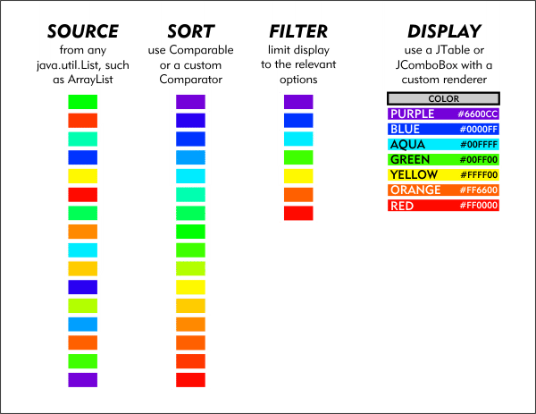

Suppose you have a list of 1,000 objects to browse. With Glazed Lists, you can:
Sort the list by whichever criterea you specify via either of the Comparable or Comparator interfaces. Sorting criteria can be changed as necessary by the user.
Filter the list to display only those that are relevant. You could type "foo" to limit the list to only items containing the string "foo".
Change the list to add, update and remove items as the source list changes in real time. If your list contained rows from a dynamic database table, changes to the data would be reflected in your list.
Display the list in a JTable or JComboBox. By using Glazed Lists' custom renderers, you can make your Java Swing application look great.
Glazed Lists uses event-driven lists. When a change to a list is made, it notifies all ListChangeListeners of the change. This is the same mechanism Swing uses to send events about user activity.
Start with a source list. A BasicEventList can contain all of the unsorted, unfiltered objects. It can be used just like an ArrayList, with all the add(), remove() and get() methods from the List interface.
Then add a mutation list. It provides a mutated view of the source list. When the source list is changed, the mutation list receives a notification to update itself. For example, the SortedList provides a sorted view of a source list. When an object is added to the source list it is simultaneously added to the SortedList in sorted order. The FilterList is a mutation list which views a subset of the source list.
Finally it is possible to create widgets to display the contents of an event list. A ListTable is a JTable that displays the contents of a list. When its source list is modified the ListTable is notified and updates the display table. There is also a JComboBox widget. It is straightforward to create custom Glazed List widgets for Swing, SWT or even Servlets.

com.odellengineeringltd.glazedlists package.
This release will be available until April 15, 2005. No maintenance updates to this release are planned.